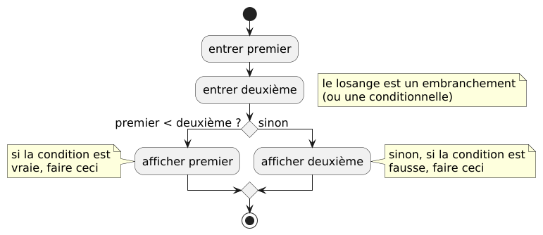
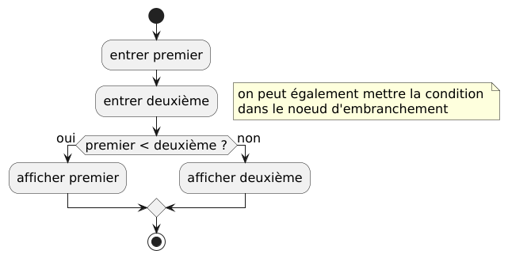
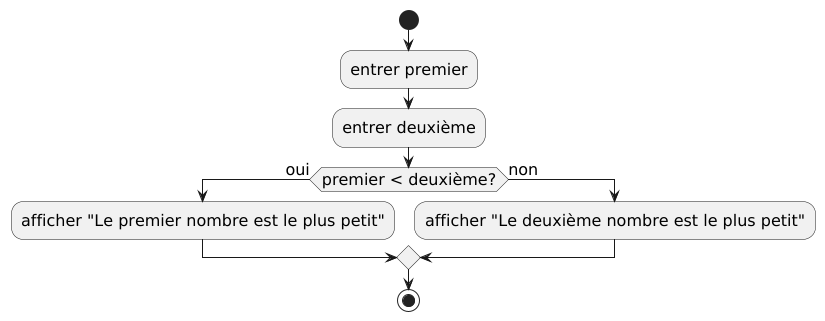
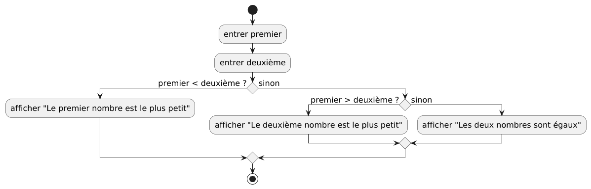
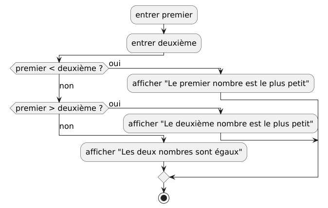
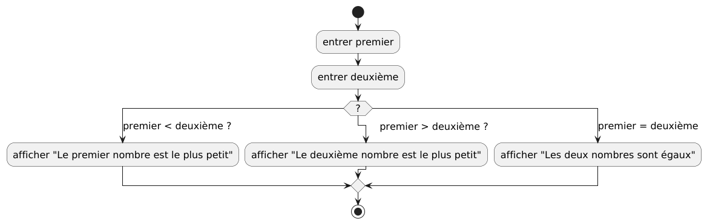

Les conditionnelles¶
Prendre des décisions¶
Les algorithmes qui ne font que prendre des entrées, calculer des valeurs à l’aide de formules et produire des résultats, ne sont pas très intéressants, ou du moins, ils deviendront rapidement redondants. Nous avons besoin d’autres concepts de programmation pour permettre de supporter des algorithmes différents et plus complexes.
Un concept utile est la conditionnelle, utilisée pour faire des choix
pendant l’exécution d’un algorithme. On l’appelle parfois une branche, car
lorsque nous exécutons un algorithme, nous pouvons nous diriger vers l’une des
nombreuses branches en fonction de certaines conditions. Pour commencer, nous
examinerons des exemples avec seulement 2 cas possibles, avec une condition qui
est soit vrai soit faux.
Commençons par un exemple pour donner l’idée générale avec un algorithme simple. Des exemples plus complexes suivront.
Trouver le plus petit de 2 nombres¶
- Entrées : 2 nombres
- Sortie : le plus petit nombre des deux
Diagrammes¶
Version 1 : condition à l’extérieur du losange¶

Code PlantUML
@startuml
skinparam defaultFontSize 16
start
:entrer premier;
:entrer deuxième;
floating note right
le losange est un embranchement
(ou une conditionnelle)
end note
if () then (premier < deuxième ?)
:afficher premier;
note left
si la condition est
vraie, faire ceci
end note
else (sinon)
:afficher deuxième;
note right
sinon, si la condition est
fausse, faire ceci
end note
endif
stop
@enduml
Version 2 : condition à l’intérieur du losange¶
Le losange est “étiré” horizontalement pour faire de la place à la condition, donc le losange n’est désormais plus un losange, il devient un hexagone.

Code PlantUML
Discussion¶
Seule l’une des deux branches de la conditionnelle sera exécutée. Si la condition est vraie, ce qui signifie que le premier nombre est plus petit que l’autre, alors le premier nombre sera affiché. Si la condition est fausse, alors la seconde branche à droite sera exécutée, et le deuxième nombre sera affiché, ce qui signifie que le deuxième nombre n’est pas plus petit que le premier. Mais cela ne signifie pas que le second nombre est plus grand que le premier. Si les deux nombres sont égaux, alors la condition est fausse, donc la branche non sera exécutée. Les exemples suivants montreront comment traiter l’égalité entre les deux nombres dans un cas spécifique, donnant ainsi 3 possibilités, ou en d’autres termes, donnant 3 options, ou 3 branches.
Notez qu’après une condition, les deux (ou plus) branches doivent normalement se rejoindre en un losange pour continuer l’algorithme. Dans cet exemple, l’algorithme se termine après la conditionnelle.
Pseudocode¶
premier = entrer()
deuxième = entrer()
si (premier < deuxième)
afficher(premier)
else
afficher(deuxième)
Trouver le plus petit de 2 nombres, version 2¶
Afficher la réponse sous forme de texte à la place de la valeur du plus petit nombre.
- Entrées : 2 nombres
- Sortie : un message disant que soit le premier nombre ou le deuxième nombre est le plus petit des 2 nombres
Diagramme¶

Code PlantUML
Discussion¶
Cet exemple n’est pas tout à fait correct, car si le deuxième nombre n’est pas plus grand que le premier, cela ne signifie pas automatiquement que le deuxième nombre est le plus petit des 2 : ils pourraient être égaux. Lors de l’affichage de la valeur du plus petit nombre, cela n’a pas d’importance, nous obtiendrons le bon résultat, mais lors de l’affichage d’un message texte, cela ne sera pas correct dans le cas spécifique où les 2 valeurs sont égales. Le prochain exemple utilise une conditionnelle à l’intérieur d’une autre conditionnelle pour distinguer les 3 cas.
Trouver le plus petit de 2 nombres, version 3¶
- Entrées : 2 nombres
- Sortie : un message disant que soit le premier nombre ou le deuxième nombre est le plus petit des 2 nombres, ou un message qui dit que les 2 nombres sont égaux
Diagramme¶

Code PlantUML
@startuml
skinparam defaultFontSize 16
start
:entrer premier;
:entrer deuxième;
if () then (premier < deuxième ?)
:afficher "Le premier nombre est le plus petit";
else (sinon)
if () then (premier > deuxième ?)
:afficher "Le deuxième nombre est le plus petit";
else (sinon)
:afficher "Les deux nombres sont égaux";
endif
endif
stop
@enduml
Discussion¶
Lorsque nous avons 3 cas (ou branches) ou plus, une seule conditionnelle ne suffira pas, car elle ne distingue que 2 cas, la partie vraie et la partie fausse de la condition. Nous déterminons d’abord si le premier nombre est plus petit que le second, puis si oui, nous procédons comme avant. Si le premier nombre n’est pas plus petit que le second, alors nous avons 2 autres cas : le second nombre est plus petit, ou les 2 nombres sont égaux. Nous avons donc besoin d’une autre conditionnelle pour distinguer ces 2 cas.
Mise en page alternative du diagramme¶
Ce diagramme représente exactement le même algorithme, mais les noeuds sont agencés différemment.

Code PlantUML
@startuml
skinparam defaultFontSize 16
!pragma useVerticalIf on
:entrer premier;
:entrer deuxième;
if (premier < deuxième ?) then (oui)
:afficher "Le premier nombre est le plus petit";
(non) else if (premier > deuxième ?) then (oui)
:afficher "Le deuxième nombre est le plus petit";
else (non)
:afficher "Les deux nombres sont égaux";
endif
stop
@enduml
Pseudocode¶
Version 1¶
premier = lire("Entrez le premier nombre: ")
deuxième = lire("Entrez le deuxième nombre: ")
si premier < deuxième
afficher(premier)
sinon
afficher(deuxième)
fin si
Version 2¶
premier = lire("Entrez le premier nombre: ")
deuxième = lire("Entrez le deuxième nombre: ")
si premier < deuxième
afficher("Le premier nombre est le plus petit")
sinon
afficher("Le deuxième nombre est le plus petit")
fin si
Version 3¶
premier = lire("Entrez le premier nombre: ")
deuxième = lire("Entrez le deuxième nombre: ")
si premier < deuxième
afficher("Le premier nombre est le plus petit")
sinon
si premier > deuxième :
afficher("Le deuxième nombre est le plus petit")
sinon :
afficher("Les deux nombres sont égaux")
fin si
fin si
Utiliser un commutateur à la place d’une séquence de conditions¶
Il est souvent préférable d’utiliser un commutateur (ou switch en anglais)
pour remplacer les
conditionnelles, surtout lorsqu’il y a beaucoup de cas déterminés par de
nombreuses conditions. Cela rend l’algorithme beaucoup plus facile à suivre.
Malheureusement, ce ne sont pas tous les langages de programmation qui
supportent les commutateurs, et certains langages de programmation ne supportent
que certains types spécifiques de commutateurs.
L’exemple suivant utilise un commutateur pour remplacer les conditionnelles pour
résoudre le même problème que l’exemple précédent. Il est suivi par un autre
exemple avec plus de cas (ou branches), en utilisant un switch d’une manière
légèrement différente.
Le plus petit de 2 nombres avec un switch¶
Diagramme¶

Code PlantUML
@startuml
skinparam defaultFontSize 16
start
:entrer premier;
:entrer deuxième;
switch (?)
case (premier < deuxième ?)
:afficher "Le premier nombre est le plus petit";
case ( premier > deuxième ?)
:afficher "Le deuxième nombre est le plus petit";
case (premier = deuxième)
:afficher "Les deux nombres sont égaux";
endswitch
stop
@enduml
Discussion¶
Nous avons un seul losange avec un point d’interrogation pour représenter le
switch, puis nous avons des flèches étiquetées avec les différentes conditions.
L’algorithme suivra la flèche dont la condition évalue à vrai. Il ne devrait y
avoir qu’une seule condition qui est vraie à tout moment, pour éviter la
confusion quant à la flèche qui doit être suivie. Il peut y avoir un cas spécial
supplémentaire étiqueté défaut, qui sera utilisé si tous les autres cas sont
faux. Dans l’exemple ci-dessus, il n’est pas nécessaire d’avoir un cas défaut,
car nos conditions couvrent tous les cas. Mais ici, on pourrait remplacer le
dernier cas qui vérifie l’égalité entre les deux nombres par un cas défaut,
pour obtenir un résultat équivalent.
Note : ici, comme nous l’avons fait dans les autres exemples, nous supposons que les valeurs d’entrée sont du bon type, dans ce cas des nombres, pour que les algorithmes fonctionnent correctement. En général, nous devrions nous assurer que les valeurs sont du bon type. Une discussion sur les types de données et comment valider l’entrée fera partie d’un autre chapitre.